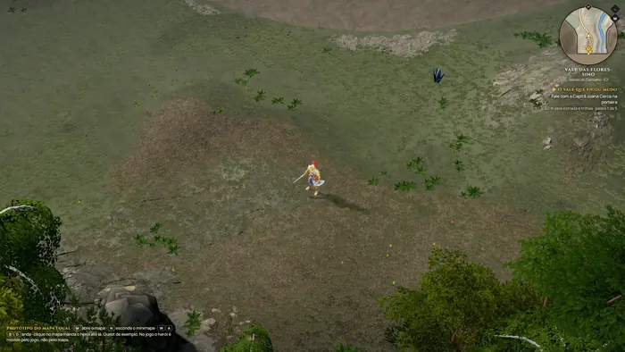
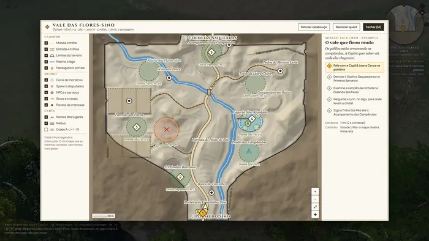
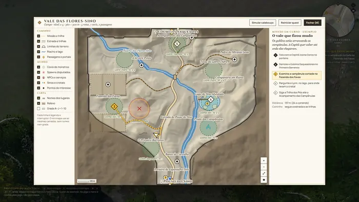
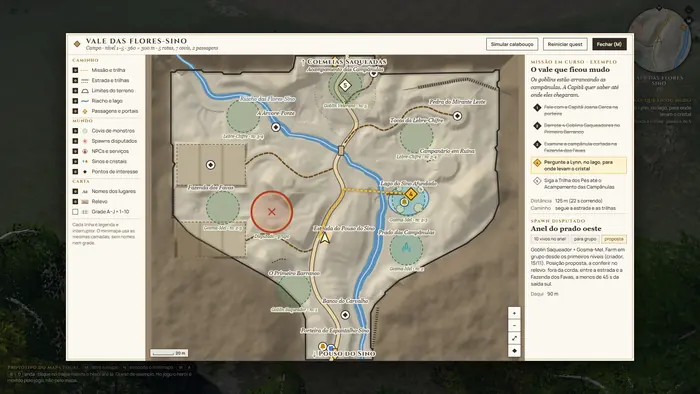
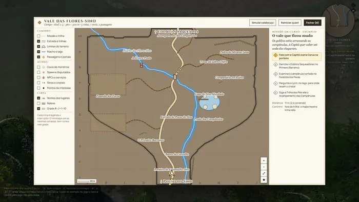
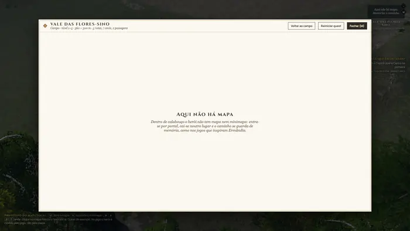
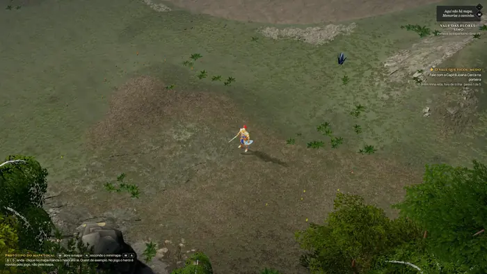
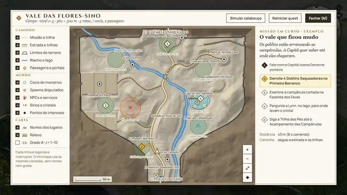

Design do jogo
Interface e HUD
HUD v3 no jogo, minimapa e mapa grande, câmera modo Z, modos de tela e F12, Sala de produção e launcher.
HUD v3 "Cristal e Ouro" (no jogo, 16/11)
Escolhida pelo criador (variação A) e implementada: emblema em losango, vida, mana e estamina, alvo no topo, uma linha de casas de 54 px com XP colado, chat sem caixa e anel de alvo 2x no chão. Lista de grupo, buffs, barra de chefe com fases e tela de morte ficam para depois.
- O personagem é o protagonista. O terço central da tela nunca recebe HUD fixo. Tudo mora nas bordas; o centro só recebe o que é do mundo (anel de alvo, número de dano).
- Quatro blocos, nada mais: eu (canto superior esquerdo), alvo (topo central), ações + XP (rodapé central), grupo (esquerda, só em grupo). Minimapa, chat e menu existem, mas discretos e ocultáveis.
- Sem caixas. Nenhum painel de fundo: barra, ícone e texto direto sobre o jogo, com sombra de texto e trilho escuro para garantir leitura.
- Cor viva só onde é informação. Vida vermelho-coral, mana azul-cristal, XP ouro, alvo azul-cristal, perigo vermelho. Molduras e textos ficam neutros. Uma cor = um significado, na tela toda.
- A tela reage ao momento. Fora de combate o HUD recua; em combate aparece inteiro; o que não se aplica (alvo, grupo, buffs) não ocupa espaço.
- Identidade do mapa-múndi. Cinzel em nomes de lugar, chefe e títulos; losango como forma-assinatura (emblema, nível, marcadores de fase, separadores); ouro fino de 1 px; cristal azul como acento.
| Nível | Elemento | Posição (1080p) | Tamanho |
|---|---|---|---|
| 1 | Vida e mana do herói + emblema da tribo | 28, 24 | emblema 72 px; vida 286x18; mana 286x11; estamina fio de 3 px |
| 1 | Alvo (nome, nível, vida) | topo central, y 22 | 440 px; chefe 760 px |
| 2 | Barra de ações (2 do mouse, 6 habilidades, 4 poções) | rodapé central | casas de 54 px, uma linha só |
| 2 | XP | colada sob a barra | 5 px de altura, nível atual e próximo nas pontas |
| 3 | Grupo | esquerda, y 168 | linha de 34 px por membro, até 5 |
| 4 | Minimapa + nome da zona | canto superior direito | 148-176 px |
| 4 | Chat (últimas linhas, sem caixa) e menu "≡" | cantos inferiores | chat 420 px; menu 40 px |
- Maquete interativa do HUD v3 (variações A, B e C)
- Maquete interativa do mapa local (minimapa e mapa grande)
Fonte: design/ux/hud-v3.md, docs/DECISIONS.md
As três variações da maquete
A "Cristal e Ouro" (escolhida), B "Silêncio de Cristal" e C "Bronze Vivo", comparadas nos mesmos estados.
O ui-screens-mvp.md previa habilidades em 1-8 e cinto em F1-F6. O criador pediu poções em 1-4, então as habilidades saem dos números:
| Grupo | Teclas padrão | Observação |
|---|---|---|
| Poções (cinto) | 1 2 3 4 (e 5 6 se o bracelete der mais casas) | remapeável |
| Habilidades | botão direito (casa 1), Q E R F G X V B (casas 2-9), ultimate T | remapeável; mesma divisão do ui-screens-mvp.md (RMB + 8 teclas + ultimate) |
| Reservadas | Z (visão em profundidade da câmera), F2 (print de feedback), W / Tab (troca de conjunto), I C K M Esc (painéis), 1-6 (poções), Enter (chat) | nenhuma habilidade usa estas |
| Troca de conjunto | W (Tab com WASD ligado) | DECISIONS 2026-11-12 |
| Janelas | I C K M, Esc | pedido do criador |
| Chat | Enter |
Teste DefaultKeys_..._DoNotCollide garante a ausência de colisões. Remapear: PlayerPrefs ragna.keys.skillN / ragna.keys.potionN (a tela de remapeamento é "depois"). Pendência para o ux-designer/criador: confirmar a divisão e atualizar ui-screens-mvp.md (que ainda cita 1-8 e F1-F6).
Fonte: design/ux/hud-v3.md, design/ux/hud-mvp.md
Minimapa e mapa grande (tecla M)
Proposta de design com maquete e capturas: minimapa em losango, mapa grande com camadas, trilha de missão, spawns disputados e calabouço sem mapa. A trilha de missão ainda depende do importador de rotas.








Dois níveis do mesmo desenho: o minimapa (disco de 176 px no canto superior direito, sempre norte para cima, centrado no herói) e o mapa grande (tecla M, folha de pergaminho com camadas, legenda, zoom e arrastar). Os dois leem a planta de rotas do mapa, então mostram exatamente as rotas, os limites, as passagens, os covis e os serviços que existem no 3D. A missão em curso desenha uma trilha dourada do herói até o próximo objetivo, seguindo a estrada e as trilhas.
"Eu sei onde estou e sei por onde ir." O mapa parece uma carta desenhada por alguém de Ermândia (mesmo papel, tinta e ouro do mapa-múndi), não um radar. Ele responde a três perguntas em um olhar: onde estou, para onde é a missão, o que há por perto. E dentro de calabouço ele some: lá o jogador guarda o caminho de memória.
Fonte: design/ux/mapa-local.md
Câmera: travada e livre (Z)
No jogo desde 16/11. Z liga a câmera livre (zoom centrado no herói, órbita 360°), ZZ volta ao enquadramento padrão.

O personagem é a coisa mais importante do jogo. Todo zoom e todo giro têm o herói como centro (foco no peito, ~1,2 m acima dos pés), nunca o cenário. O jogador precisa poder chegar perto para admirar o equipamento que acabou de dropar.
- Ângulo e distância fixos (padrão: enquadramento 7 m, inclinação ~40°).
- Setas do teclado: só giram a câmera em volta do herói (esquerda/direita = giro horizontal), mantendo ângulo e distância.
- Movimento do herói: clique e WASD (decisão de 11/11).
- Scroll do mouse: zoom para dentro e para fora, centrado no herói, partindo do zoom atual.
- Setas: cima = avança o zoom em direção ao herói; baixo = afasta; esquerda/direita = giram em volta do herói. O zoom acompanha.
- Botão do meio do mouse pressionado + arrastar: gira livremente em volta do herói (horizontal e vertical); com o botão do meio pressionado, o scroll continua aproximando/afastando.
- Ao aproximar, a câmera baixa e abre a lente (de "visão de mapa" para "visão do olho humano"), até um close de inspeção do personagem (~2-3 m). Ao afastar, volta à visão isométrica.
- Z duas vezes (Z Z): volta para a câmera padrão travada.
Fonte: design/ux/camera-modo-z.md, docs/DECISIONS.md
Modos de tela, resolução e F12
Tela cheia exclusiva, sem borda ou janela, resolução, Alt+Enter alterna janela e último modo cheio, F12 salva uma captura em PNG (aviso de 3 s). Provado no build de jogador; o Alt+Enter ainda não foi provado no build.
Fonte: docs/DECISIONS.md
Sala de produção (F9)
Lista os mapas, abre os que têm cena e volta com F9; estilo cristal, com foto de cada mapa.


Launcher do jogo
WPF .NET 10: confere a versão, baixa só o que mudou, mostra novidades e abre o jogo (sobe o servidor local se preciso). Hospedagem da atualização só com o "sim" do criador.


HUD B "Cristal" v2 (superado)
Layout anterior, mantido só como histórico: a v3 o substitui.